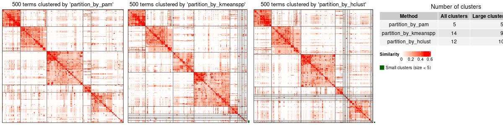
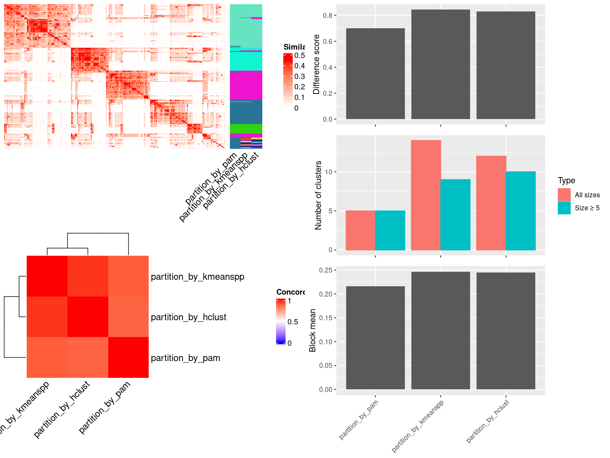

Figure 1. Clusterings from different methods. Green bars represent the small clusters with number of elements less than 5.

Figure 2. Compare clustering results. Top left panel: Similarity heatmap with clusterings from different methods. Bottom left panel: Concordance between clustering methods. The concordance measures how similar two clusterings are. Right panel: The difference score, number of clusters and the block mean of different clusterings.
